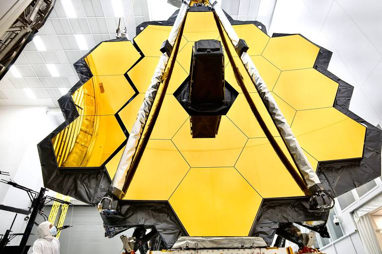

Post #1
O telescópio espacial James Webb (Link da matéria) atingiu no último sábado (8) sua configuração definitiva para iniciar a exploração do cosmos, duas semanas após o seu lançamento. O dispositivo, considerado o mais potente já feito pela humanidade, terminou de "desdobrar" seus espelhos e, daqui a cinco meses, deverá iniciar suas atividades de observação....